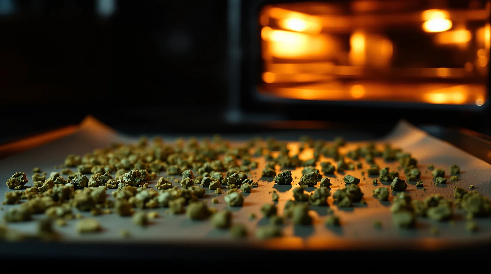

Cannabis Decarboxylation: What It Is and How to Decarb at Home
Raw flower is mostly THCA. Here's how gentle heat turns it into THC for edibles and oils, with the times, temperatures and home methods that work.

Key takeaways
- Decarbing uses gentle heat to turn THCA and CBDA into THC and CBD. Edibles and oils need it; smoking and vaping do it for you.
- For THC-rich flower, start at about 240°F for 30 to 45 minutes. CBD-rich flower needs roughly twice as long.
- Lower, slower heat keeps more aroma, and a sealed jar or bag keeps the smell in.
- Skip the microwave: it heats unevenly and can scorch your flower.
- Label decarbed flower clearly and store it airtight, cool, dark and out of reach.
Raw cannabis flower is rich in THCA, an acid form of THC that isn't considered intoxicating until it's heated. Decarboxylation, or decarbing, is the gentle heating step that turns THCA into THC, and it's what makes homemade edibles work. If you're learning how to decarb weed at home, the short answer is a low oven: about 240°F for 30 to 45 minutes on a lined tray. Below, we explain why that works, when you can skip it and how the other methods compare.
What decarboxylation does: THCA and CBDA become THC and CBD
The cannabis plant doesn't make much THC or CBD directly. It makes their acid forms, THCA and CBDA, along with CBGA and other acids. Each acid carries an extra carboxyl group, a small cluster of carbon, oxygen and hydrogen atoms. Heat knocks that group off as carbon dioxide, and what's left is the familiar cannabinoid.
Researchers have measured how quickly this happens. In a 2016 lab study of cannabis extracts, THCA was almost fully converted after about 30 minutes at 230°F (110°C). At 266°F (130°C) it took 9 minutes, and at 293°F (145°C) just 6. CBDA and CBGA converted at roughly half the speed of THCA, and part of them was lost to side reactions along the way.
Flower on a home oven tray is bulkier than a lab sample, and home ovens drift, so home methods run a little longer than the lab times.
When to decarb, and when to skip it
- Smoking and vaping: skip it. A flame or a vaporizer's heating chamber converts THCA in the moment, so heating the flower first would only dry it out and waste aroma.
- Edibles, butter and oil: decarb first. Infusions simmer well below oven temperatures, so they convert THCA slowly and unevenly on their own.
- Tinctures: decarb first. Steeping in alcohol or oil doesn't supply enough heat to do the job.
- Kief and hash for cooking: decarb these too. They're concentrated forms of the same plant acids.
- Activated extracts: many distillates are decarboxylated during processing. The label's THC and THCA figures show which form you have.
What about cannabutter without decarbing? It works, but expect a weaker and less predictable result. A gentle simmer converts THCA far more slowly than an oven does, and how much converts changes with every batch.
Why it matters: potency, consistency and flavor
Potency. Skip the decarb and much of the THCA in your flower stays THCA, so a batch of brownies can turn out far weaker than you planned.
Consistency. A measured, even decarb gives you the same starting point each time. That makes it easier to portion homemade edibles and to compare one batch with the next.
Flavor. Heat also drives off terpenes, the aromatic compounds behind each strain's smell and taste. Too much heat leaves a toasted, bitter note that carries into everything you cook.
Temperature and time: cannabinoids vs. terpenes and flavonoids
Decarbing is a trade-off. Higher heat converts cannabinoids faster, but terpenes are volatile, and they begin to evaporate well below their boiling points. Much higher heat can also oxidize THC into a cannabinoid called CBN, and it scorches the plant material.
Here's where some common terpenes boil. Most sit well above a decarb oven, yet they still evaporate steadily at lower temperatures, and the loss speeds up as the heat climbs.
| Terpene | Aroma notes | Boiling point |
|---|---|---|
| Alpha-pinene | Pine | About 311°F (155°C) |
| Myrcene | Earthy, musky | About 333°F (167°C) |
| Limonene | Citrus | About 349°F (176°C) |
| Linalool | Floral | About 388°F (198°C) |
| Beta-caryophyllene | Peppery, spicy | About 493°F (256°C) |
That's why lower and slower keeps more aroma, and why a sealed jar or bag helps: it holds in some of what does evaporate. Flavonoids, which add to color and flavor, have been studied far less in home cooking. Moderate heat and no scorching remain the safest approach for them too.
For THC-rich flower, 230 to 245°F for 30 to 45 minutes converts THCA in a reasonable time without roasting the aroma away.
THC-rich, CBD-rich and balanced flower compared
Because CBDA converts at about half the speed of THCA, flower that's rich in CBD needs more time in the oven. Use these numbers as starting points and adjust for your own oven.
| Flower type | Main acid | Oven starting point | Notes |
|---|---|---|---|
| THC-rich | THCA | 240°F for 30 to 45 minutes | The standard for most edibles |
| CBD-rich, including hemp-type CBD flower | CBDA | 240°F for 60 to 90 minutes | Roughly double the THC time |
| Balanced, about 1:1 | THCA and CBDA | 240°F for about 60 minutes | A middle ground for both acids |
If you decarb CBD flower, the longer bake means more aroma loss. A sealed jar is a good fit here, since it keeps more of the terpenes in the container.
Methods compared: oven, jar, bag, water bath and devices
Here's how the common home methods stack up.
| Method | How it works | Good for | Watch out for |
|---|---|---|---|
| Oven tray | Broken-up flower on a parchment-lined baking sheet | Simple, even results | Strong smell, more aroma loss |
| Oven bag | Flower sealed in an oven-safe cooking bag on a tray | Less smell | Check the bag's heat rating and keep it off the oven walls |
| Mason jar | Flower in a closed canning jar on a towel-lined tray | Keeping smell and aroma in | Takes longer; let the jar cool fully before opening |
| Water bath | Flower vacuum-sealed and held in water just below boiling, on the stovetop or with a sous vide stick | No scorching | Slower conversion, so plan on 90 minutes or more |
| Decarb device | A countertop unit that holds a set temperature in a sealed chamber | Hands-off, low smell | Cost; follow the maker's instructions |
| Microwave | Short bursts of microwave heat | Speed, in theory | Uneven heating, scorching and unpredictable strength |
For the water bath, keep the sealed bag off the bottom of the pot with a rack or a clip, and top up the water as it evaporates.
There's also a slow, natural version. A little THCA turns into THC while flower is dried, cured and stored, but far too little to replace a proper decarb for edibles.
How to decarb weed in the oven, step by step
The oven tray method is the easiest place to start. Stay home while the oven is on, keep the kitchen ventilated, and keep children and pets out of the way.
- Preheat the oven to 240°F (about 115°C). An inexpensive oven thermometer helps, since many ovens run hot or cold.
- Break the flower into small pieces by hand or with a coarse grind. Skip powder: it scorches faster and is harder to strain later.
- Cover a baking sheet with parchment and spread the pieces out so they don't overlap.
- Bake THC-rich flower for 30 to 45 minutes, gently shaking the tray about halfway through. Give CBD-rich flower 60 to 90 minutes.
- Check the color. Well-decarbed flower looks golden brown and feels dry and crumbly, while dark brown means it's gone too far.
- Let it cool on the tray, then move it to an airtight glass jar and label it clearly.
Using a jar instead? Put the broken-up flower in a canning jar, close the lid finger-tight, set it on a towel-lined tray and bake at the same temperature for about 60 minutes. Let the jar cool completely before you open it.
Storing decarbed flower and next steps
Decarbed flower is ready to infuse. Keep it in a sealed glass jar somewhere cool and dark, and use it soon for the best flavor. Label the jar so nobody mistakes it for regular flower, and keep it well away from children and pets.
From here, most home cooks make one of two things:
- Butter for baking: our cannabutter guide walks through the simmer and the strain.
- Cooking oil for savory dishes and dressings: see how to make canna oil.
Homemade edibles vary in strength, so try a small portion first and give it plenty of time before having more. Need flower for your next batch? Browse the menu in our online shop and order ahead for pickup, or ask our budtenders to help you choose. Enjoy cannabis responsibly.
Frequently asked questions
What temperature should I decarb cannabis at?
A common home setting is 230 to 245°F, about 110 to 118°C. That range converts THCA to THC in roughly 30 to 45 minutes while going easier on aroma than hotter settings. CBD-rich flower needs about twice as long. Ovens often run hot or cold, so an oven thermometer is worth having.
How long does decarbing take?
About 30 to 45 minutes for THC-rich flower on an open tray at 240°F, plus cooling time. A sealed jar takes closer to an hour, because the heat has to get through the glass. A water bath just below boiling needs 90 minutes or more, and CBD-rich flower roughly doubles each of these times.
Do I have to decarb cannabis before making edibles?
Yes, if you want predictable strength. Butter and oil infusions stay well below oven temperatures, so they convert THCA slowly and unevenly on their own. Decarbing first makes each batch more consistent and easier to portion. Smoking and vaping don't need this step, since the heat does the job in the moment.
Can I decarb cannabis in a microwave?
It's best not to. Microwaves heat unevenly, so some pieces scorch while others barely warm, and there's no reliable way to hold a steady temperature. The result is harsh flavor and unpredictable strength. An oven, a sealed jar, a water bath or a dedicated decarb device gives you far more control.
Will decarbing make my kitchen smell?
Yes, especially on an open tray. Heat releases terpenes, the aromatic compounds behind that familiar cannabis smell. A sealed mason jar, an oven bag or an enclosed decarb device keeps most of the smell contained. Open the jar only after it has cooled completely, and run the range hood while you work.
Sources
- Wang M. et al., Decarboxylation Study of Acidic Cannabinoids, Cannabis and Cannabinoid Research (2016) pmc.ncbi.nlm.nih.gov
- PubChem (NIH): alpha-Pinene, boiling point pubchem.ncbi.nlm.nih.gov
- PubChem (NIH): Myrcene, boiling point pubchem.ncbi.nlm.nih.gov
- PubChem (NIH): Limonene, boiling point pubchem.ncbi.nlm.nih.gov
- PubChem (NIH): Linalool, boiling point pubchem.ncbi.nlm.nih.gov
- PubChem (NIH): Caryophyllene, boiling point pubchem.ncbi.nlm.nih.gov
- Moreno-Sanz G., Can You Pass the Acid Test? Critical Review and Novel Therapeutic Perspectives of Delta-9-Tetrahydrocannabinolic Acid A, Cannabis and Cannabinoid Research (2016) pubmed.ncbi.nlm.nih.gov
For adults 21 and older. Keep cannabis away from children and pets, and never drive after consuming. In New Jersey, cannabis smoking is allowed where cigarette smoking is permitted, unless stated otherwise.
1070 Springfield Ave Suite C, Irvington, NJ 07111